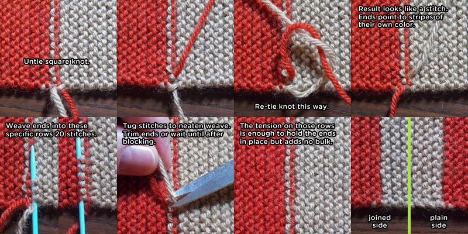

"INVISIBLE" JOINS
Invisible gets quotes because, of course, you can always spot the join, but this one hides pretty well. It’s not anything new or novel at all - just plain old weaving in.
For best results, slip the last stitch knit-wise at the end of each row. To join a new color, knit the first stitch on the row with the old color. Tie the new yarn to the old with a square knot that is loose enough to untie later. Leave about 6 inch ends. Continue knitting until you’re ready to hide the joins as follows (right-hand instructions):

How the knot is re-tied is critical. It is like the beginning of tying a shoelace only opposite the direction you’d normally go. Match the photo! If the ends don’t point to stripes of their own color, you have not knotted correctly.
Without studying closely, it will be difficult to distinguish the joined side from the plain. They’re almost symmetrical.
The original scarf used 3 stitches before the color join. This will make it even more secure, but a single stitch plus a knot will definitely do the trick as well as look better. This join is fairly easy to undo if you ever decide to chop up your scarf into a Shada version or need to make repairs.
Expect the instructions above to be improved and new tips and tricks to be added soon.